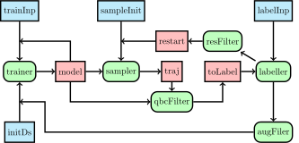

tips/explore
The module implements the explore workflow in which a model is used to sample the configuration space.

The flowchart of the workflow is shown above, with the blue boxes being the inputs, green boxes being the sub-workflows, and the red being intermediate dataflow channels, the final model will be the output for each set of inputs.
Options
| Inputs | Default | Description |
|---|---|---|
| trainer | "pinn" |
an abstract trainer |
| sampler | "pinn" |
an abstract sampler |
| labeller | "lammp" |
an abstract labeller |
| maxIter | 0 |
max iteration |
| initDs | null |
initial dataset |
| trainInit | null |
initial input for trainer |
| trainSeeds | 2 |
number of seeds for qbc |
| trainSteps | 200000 |
initial training steps |
| retrainIter | 200000 |
retrain steps after augmentation |
| sampleInit | null |
initial structure for sampler |
| labelInp | null |
input for labbeller |
Usage
tips/explore assumes that we have already a minimal dataset to start with,
this might not be always the case. Below show an example of training a model
with the SPC/Fw classical force field, where an initial dataset is generated by
the same force field with a short NVT simulation (the files to reproduce this
workflow can be found
here)
#!/usr/bin/env nextflow
nextflow.enable.dsl=2
// hard coded
initInp = 'csvr.lmp'
initGeo = 'init.xyz'
trainInp = 'pinet.yml'
labelInp = 'label.lmp'
// params, will be parsed to all sub-workflows
params.publishDir = 'explore'
params.augFilter = '-vmax "e:-20" -amax "f:10"'
params.resFilter = '-vmax "e:-42" -amax "f:4"'
params.qbcFilter = '-a qbc'
params.trainSeeds = '2'
params.sampleInit = 'init.xyz'
// lammps specific params
params.lmpEmap = '1:1,2:8,3:11,4:17'
params.lmpInit = 'nacl.init'
params.lmpData = 'nacl.data'
params.lmpSetting = 'nacl.setting'
// pinn specific params
params.pinnBatch = '1'
params.repeat = 3
tipsDir = '../../nextflow'
include {sampler} from "$tipsDir/adaptor" addParams(sampler:'lammps')
include {explore} from "$tipsDir/explore" addParams(trainInp:trainInp,
labelInp:labelInp)
workflow {
initDs = sampler([null, [inp:initInp, init:initGeo, subDir:'init']])
inputs = initDs.flatMap{(1..params.repeat)
.collect{run->[it[0], [subDir:"explore$run",initDs:it[1]]]}}
explore(inputs)
}
Here, the training and labelling configs are parsed to the explorer through
params.